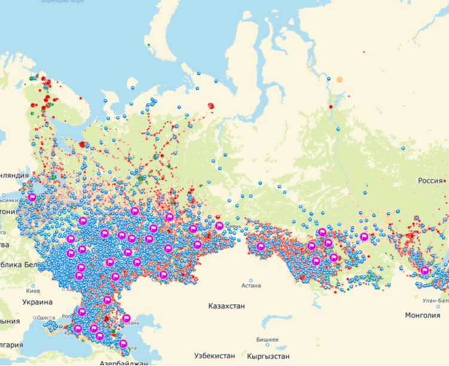

Методика определения опорных населённых пунктов России
Methodology for identifying support settlements in Russia
Разработана совместно со специалистами АНО «Агентство развития сельских территорий» Минсельхоза РФ и утверждена распоряжением Правительства РФ от 23 декабря 2022 г. № 4132-р.
Developed jointly with the Rural Territories Development Agency of the Ministry of Agriculture of Russia and approved by Government Order No. 4132-r.